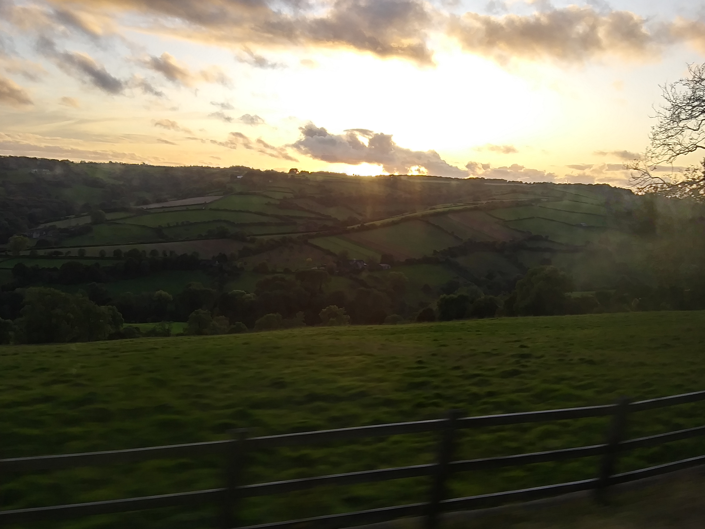
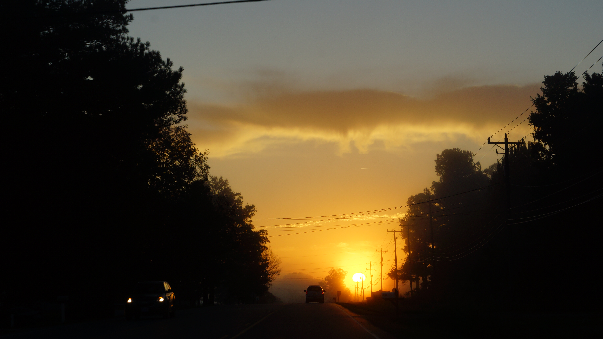
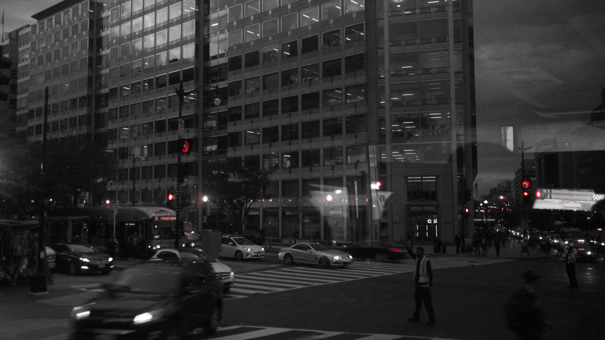
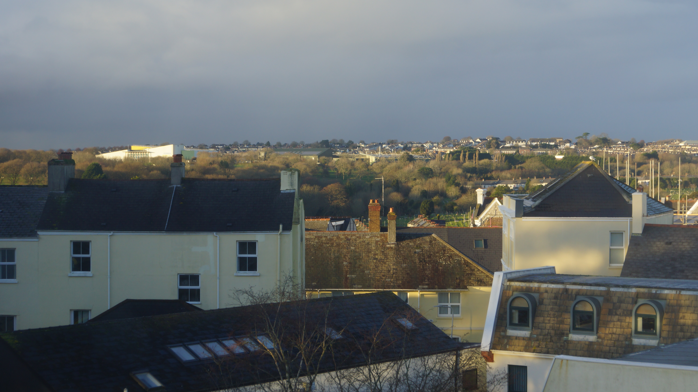
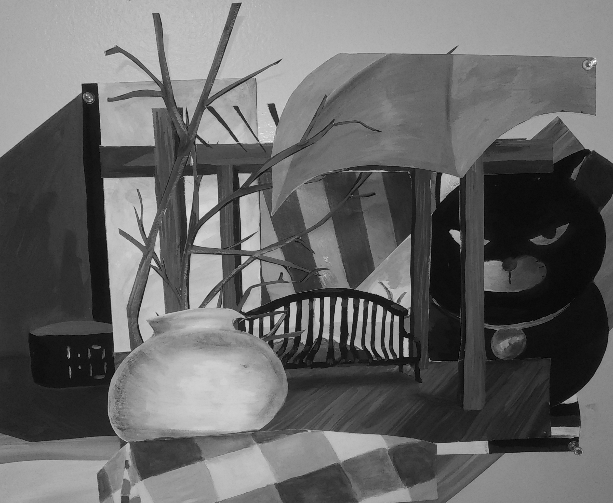
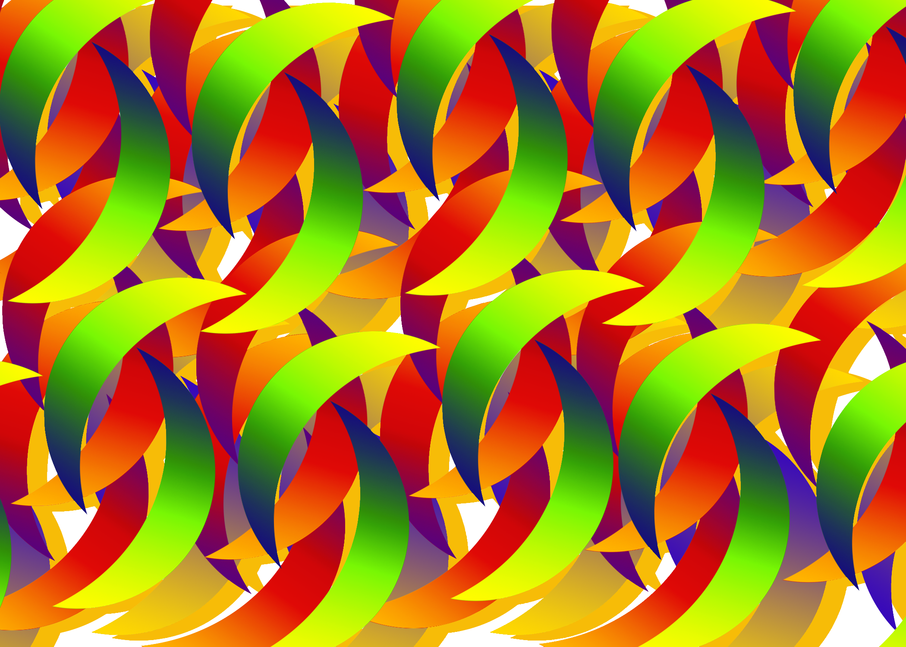

Photography Paintings
Digital ArtDrawings
Digital Art & Drawings
 (1).jpg)
Based of a article - Letter of Recommendation: Graphic design showing of a mix of real and fake flowers.

The ending of the narrative of the monster and it’s after effect.

A narrative involving the creation of a monster and it attacking others.

Made by editing the code of a picture. It is always a surprise to see how it turns out.

Using bezier lines curving and bending to create art.

Growing swirling circle made using javascript.

A perspective pen drawing of a city street.

Made using a graphite pencil. A still life of random objects on top of the drawer.
.png)
Angles and lines made using javascript.

Glitches made by editing the code of a picture.
Contact Form
Photography & Paintings


A picture of the countryside taken while riding on the bus in England.
Looking at the sky through the tree leaves.
.JPG)
A butterfly on a picnic table.
I took this picture, which looked at a photographer at work.

A still life, made using ink.


A picture of the sunset taken in a car while cars passed by.

Originally taken by accident, when I had left a setting on my camera. It was taken in the City of Washington, DC. This is a city filled with historic importance in the US. The black and white picture highlights its history of being older. It also contrasts this with its modern buildings and the modern city with the red highlights.
Black and White Plam Trees Acrylic Painting
A picture of the 18th President of the US, Abraham Lincoln, at the Lincoln Monument at night.

Pictures of houses seen on the hills in the City of Plymouth.
.png)
The idea for this work is pareidolia, which is when you see faces in things that aren’t faces. In this work, there is a face but the hair around the face has hidden faces and objects in it, such as a fish and a baby.


n this work, I used gouache and charcoal to create six separate environments. After completing these six pieces, I cut them up and put them together to create a space that mixed interior spaces with exterior spaces.
Using shapes, lines, and curves to make a painting

Using crescents and many gradients to make a pattern.